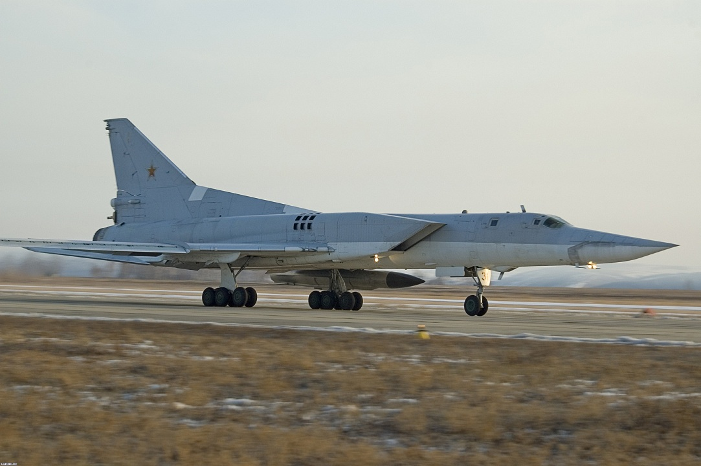

The Tupolev Tu-22M is a supersonic, swing-wing, long-range strategic and maritime strike bomber developed by the Soviet Union. Significant numbers remain in service with the Russian Air Force.As with the contempor-ary MiG-23 and Su-17 projects, the advantages of variable-geometry wings seemed attractive, allowing a combination of short take-off performance, efficient cruising, and good high-speed, low-level ride. The result was a new swing-wing aircraft called Samolyot 145 derived from the Tupolev Tu-22, with some features borrowed from the abortive Tu-98. The Tu-22M was based on the Tu-22's weapon system and used its Kh-22 missile. The Tu-22M designation was used to help get approval for the bomber within the Soviet system.Production of all Tu-22M variants totalled 497 including pre-production aircraft.During the Cold War, the Tu-22M was operated by the VVS in a strategic bombing role, and by the AVMF in a long-range maritime anti-shipping role.During the 1970s, Tu-22M made a few simulated attack runs against U.S. Navy carrier battle groups. The bomber also made attempts to test Japan's air defense boundary on several occasions. On Good Friday night of on March 29, 2013 two Tu-22M3 bombers made simulated attacks on Sweden. The Swedish air defense failed to respond.The Tu-22M was first used in combat in Afghanistan from 1987 to 1989. Its usage was similar to the United States Air Force deployment of B-52 Stratofortress bombers in the Vietnam War, dropping large tonnages of conventional ordnance. The Russian Federation used the Tu-22M3 in combat in Chechnya during 1995, performing strikes near Grozny.At the time of the dissolution of the Soviet Union, some 370 remained in CIS service. Production ended in 1993. The fleet strength was about 84 aircraft in 2008.The Russian military acknowledged the loss of a Tu-22MR recon aircraft to Georgian air defences early in the 2008 South Ossetia war.One of its crew members was captured two others were killed and the crew commander is missing in action as of August 2009.The Tupolev company has sought export customers for the Tu-22M since 1992, with possible customers including Iran, India and the People's Republic of China, but no sales have apparently been made. However unlike the Tu-22 bomber, Tu-22M bombers were not exported to middle-east countries that posed threat to US military presence in the region. Through 2001, four Tu-22M aircraft were leased to India for maritime reconnaissance and strike purposes.In January 2013, reports emerged that China had signed a purchase agreement for the production and delivery of 36 Tu-22M3, under the Chinese designiation of H-10; many components are to be manufactured domestically in China under a technology transfer agreement with Russia and Tupolev.[11] Sales of the Russian-built Raduga Kh-22 long-range anti-ship missile and the fleet's intended use as a maritime strike platform have also been speculated upon.However, Rosoboronexport has reportedly denied any sales or negotiations with China regarding the Tu-22M.